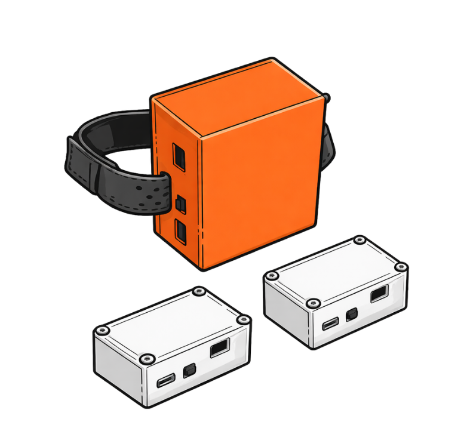

A wearable safety system for elderly bathing — built to prevent 19,000 silent deaths every year.
Multi-modal sensing. Stage-aware safety logic. Runs privately, locally, and alerts caregivers the moment things go wrong.
A silent crisis in Japanese homes.
Deaths in bathtubs are one of the most under-reported preventable risks for elderly Japanese — a cultural bathing norm colliding with aging circulatory systems.
- 19,000 deaths per year in Japan
- 90% of victims are 65 or older
- 4× annual Japanese traffic deaths
Three overlapping risk categories
-
Physiological
Blood-pressure swings, heatstroke, cardiac stress — the body's own response to hot immersion turns hostile in older circulatory systems.
-
Kinematic
Fainting, slipping, and silent drowning. Elderly victims tend to slide under water without a struggle, so the window for rescue closes fast.
-
Environmental
Sudden cold-to-hot temperature transitions — known as "heat shock" — trigger the blood-pressure cascade that starts most fatal events.
Response window is 3–4 minutes to brain damage, 4–6 to death. Reaction isn't enough — prevention is.
Most systems watch one thing. Bathing accidents happen when three fail together.
Existing wearables, nurse-call systems, and smart bathroom devices each solve part of the problem. None of them see how the pieces interact.
-
Body-only monitors
Track heart rate or SpO2, but miss the fall itself and the hot-water context that caused it.
-
Motion-only cameras
See a body go limp, but can't tell stroke from sleep, and introduce privacy problems in a bathroom.
-
Room-only thermometers
Know the water is 42 °C but don't know who's in it or whether they're still conscious.
Thermal Guardian combines all three signals, stage-aware — so a high heart rate during immersion means something different than a high heart rate after exit.
Three layers. One local hub. No camera in the bathroom.
Sensors watch the body and the room. A hub in the home interprets context. Caregivers get alerts — with a fallback to emergency services if nobody is reachable.

-
Wearable
IPX7 wrist band
Seeed XIAO ESP32-S3 · 6-axis IMU (ISM330DHCX) · PPG (MAX30101) · skin-temp (MCP9808) · env temp + humidity (SHT40) · haptic motor for local alerts.
-
Bathroom node
Ambient watcher with voice
Tracks bathroom air temperature and humidity. Onboard I2S speaker (MAX98357A) delivers multilingual voice alerts during immersion.
-
Changing-room node
Heat-shock sentinel
Measures the cold-to-hot differential that starts most fatal events. Triggers a warning when the temperature gap crosses the 15 °C threshold.
- Sensors read body and environment continuously. Heart rate, motion, skin and air temperature, humidity — all at once, all while the user bathes.
- The local hub interprets context and confirms risk on-device. No camera, no cloud round-trip for alert decisions. It knows whether the user is in pre-bath, immersed, or exiting, and applies thresholds accordingly.
- Caregivers get alerts instantly. Emergency services are a fallback only when nobody is reachable — the default path is human, not 119.
Three things set Thermal Guardian apart.
-
01
Multi-modal sensing
Body, motion, and environment are combined in a single system. Most competitors pick one. We need all three to distinguish a nap from a collapse, or a hot bath from heatstroke.
-
02
Stage-aware safety logic
The system recognises where you are in the bathing ritual — pre-bath, immersion, post-exit — and adjusts its thresholds for each stage. A high pulse during immersion is expected; the same pulse after exit is an alert.
-
03
Private by design
No cameras. Risk decisions run on-device at the local hub. Data only leaves the home when the caregiver asks for it. Compliance and dignity, by default.
Accepted at two venues that matter.
Peer-reviewed academic publication plus a national-level innovation contest — both in the first five months of 2026.
-
Academic · Accepted
HEALTHINF 2026 — paper accepted
Part of the BIOSTEC 2026 joint track. Marbella, Spain · 2–4 March 2026.
-
Industry · Japan Preliminary
iCAN 2026 — Japan Preliminary
Presenting the system at the International Contest of Innovation. Tohoku University · 2026-04-26.
See the pitch.
A short conference talk that walks through the problem, the system, and the clinical logic behind it.
The people behind Thermal Guardian.
-
Joseph Arthur Koo
-
Ken Argani Toendan
-
Shimada Ethan Taku
-
Akaiduzzaman A.K.M
Talk to us.
Investors, partners, and press — we welcome briefings, collaboration proposals, and clinical-partner introductions. We typically reply within two working days.